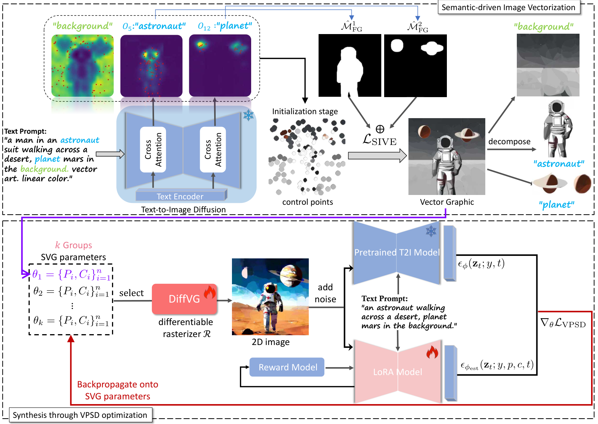
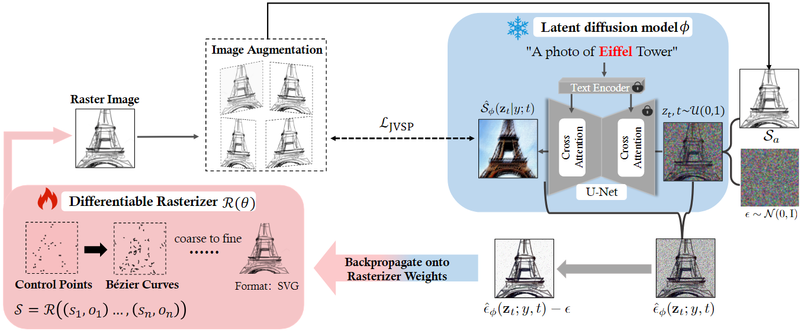
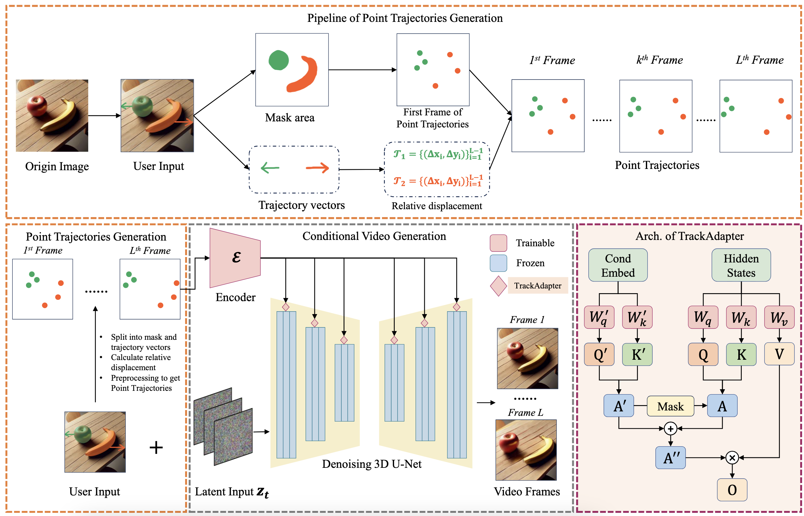
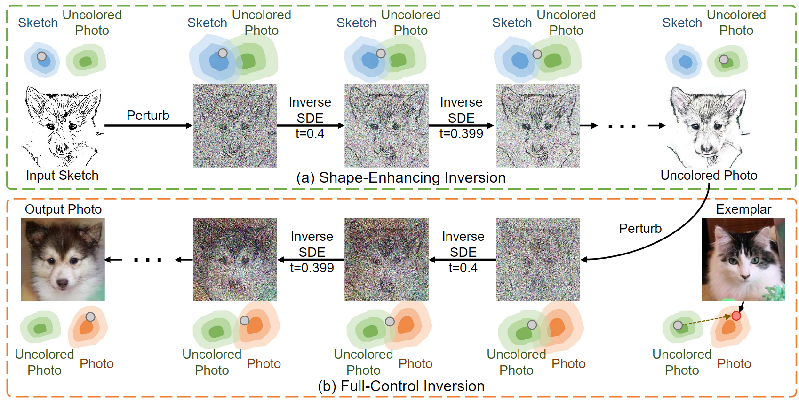

|
I am a Master's student from Beihang University(BUAA). And I am also an algorithm intern of AIsphere, where I work on video generation. I got my Undergraduate's degree from the BUAA. Recently, my research focuses on deep generative models(Diffusion models and its application) and sketch&SVG generation. |
{kind=link}
Publications (* equal contribution, † corresponding author)
|  |
Xingming Xing, Haitao Zhou, Chuang Wang, Jing Zhang, Dong Xu, Qian Yu† Computer Vision and Pattern Recognition(CVPR), 2024 Paper / Code 
|
|  |
Xingming Xing, Chuang Wang, Haitao Zhou, Jing Zhang, Qian Yu†, Dong Xu Neural Information Processing Systems (NeurIPS), 2023 Paper / Code 
|
Preprints (* equal contribution, † corresponding author)
|  |
Haitao Zhou*, Chuang Wang*, Rui Nie, Jinxiao Lin, Dnogdong Yu, Qian Yu†, Changhu Wang† arXiv, 2024 arXiv |
|  |
Xingming Xing, Chuang Wang, Haitao Zhou, Zhihao Hu, Chongxuan Li, Dong Xu, Qian Yu† arXiv, 2023 arXiv / Code 
|
Projects

|
PyTorch-SVGRender is the go-to library for differentiable rendering methods in SVG generation. It supports a variety of vectorization methods, including: Image-to-SVG, Text-to-SVG, Text-to-Sketch. Based on Pytorch, 2023Project Page / Doc / Code 
|
Work Experience
AIsphere (Algorithm Intern), 2023.05~Now.
Main job content: The construction and tuning of the basic model of video generation; The construction of the controllable video generation pipeline. The lead person for the Magic Brush project.
Awards
ACM-ICPC Asia Regional Contest Silver Medal, 2019
Huawei Smart Dock Scholarship, 2023
Outstanding graduate of Beihang University, 2023
Outstanding student award(Top 5%) of Beihang University, 2020;2021;2022
Professional Activities
Reviewer for CVPR 2024, MM 2024, AAAI 2025
Interests
Reading, Coding and Harmonica.
Members of the novel sinicization group of A Certain Magical Index(魔法禁书目录).
|
Design and source code from Jon Barron.
|